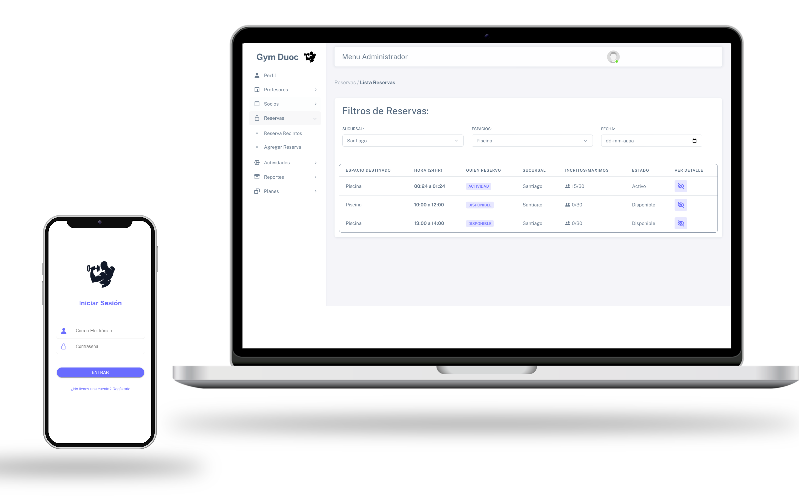
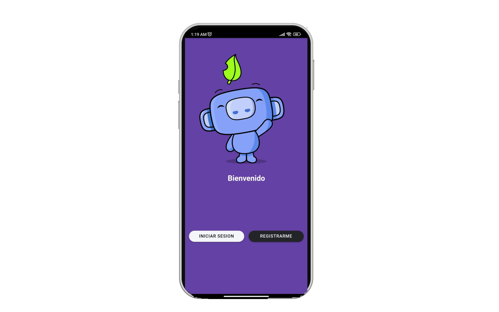

Desarrollo full-stack
Aplicaciones web, APIs y datos.
Software Engineer · Santiago, Chile
Desarrollo aplicaciones web y móviles, APIs e infraestructura cloud, conectando una buena experiencia de producto con bases técnicas confiables.
Perfil profesional
Software Engineer con experiencia en desarrollo full-stack, arquitectura backend e infraestructura cloud en AWS. He trabajado en aplicaciones web, móviles y servicios en producción, desde el diseño de APIs hasta su publicación y operación.
Mi foco combina desarrollo de producto, integración de servicios y prácticas de entrega confiables.
Aplicaciones web, APIs y datos.
Experiencias multiplataforma para iOS y Android.
Servicios en AWS, contenedores y CI/CD.
Servicios por capas, seguridad e integraciones.
Trayectoria
Experiencia en producto, plataformas y servicios para entornos de producción.
GENERA · HR Digital
Huechuraba, Chile
Desarrollo y mantención de aplicaciones móviles multiplataforma, APIs REST y servicios backend con foco en seguridad, publicación y operación de releases.
Inmobiliaria Fundamenta
Las Condes, Chile
Desarrollo y despliegue de aplicaciones web en Laravel sobre AWS; migración de aplicaciones hacia microservicios y contenedores, con automatización de entregas y monitoreo.
Trabajo independiente
Chile
Diseño, desarrollo y publicación de 8 aplicaciones Android, incluyendo el ciclo de vida de releases y servicios backend serverless y autoescalables.
Red de Recursos Humanos
Santiago, Chile
Desarrollo de módulos web y rediseño de interfaces, con mejoras de UX/UI, optimización y refactorización de código existente.
Trabajo seleccionado
Una selección que recorre proyectos académicos, móviles y de producto.
Desarrollo independiente
Diseño, desarrollo y publicación de 8 aplicaciones Android, con servicios backend serverless y gestión de releases.

Proyecto de título
Sistema de administración para complejos deportivos con reservas, membresías y gestión de operaciones.

Aplicación móvil
Aplicación para coordinar viajes entre estudiantes, con rutas, tarifas y gestión de usuarios.
Stack técnico
Herramientas que respaldan mi experiencia profesional y los proyectos de este portafolio.
PHP, Laravel, Node.js, C# / .NET, ASP.NET Core, REST, Swagger / OpenAPI, OAuth2, OpenID Connect y JWT.
React, Angular, Ionic, React Native, Flutter, Kotlin, Swift, JavaScript, TypeScript, HTML y CSS.
AWS, Docker, Linux, Jenkins, GitHub Actions, CodePipeline, CloudWatch, Prometheus, Git y Bitbucket.
MySQL, SQL Server, Entity Framework Core, RDS, Aurora, CI/CD, despliegues y administración de releases.

Sobre mí
Me interesa crear soluciones eficientes, mantenibles y preparadas para producción. Disfruto enfrentar desafíos técnicos, colaborar con equipos y aprender en un entorno que evoluciona constantemente.
Actualmente profundizo mi formación en Ingeniería en Computación e Informática en la Universidad Andrés Bello, después de titularme como Analista Programador Computacional en DUOC UC.
Contacto
Conversemos sobre cómo puedo aportar desde el desarrollo de software, plataformas y productos digitales.
ivancristopher5@gmail.com